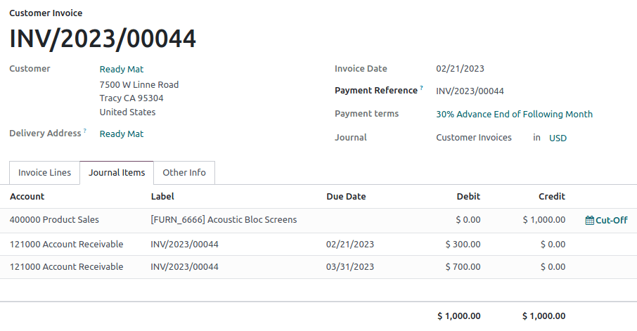

Payment terms and installment plans¶
Payment terms specify all the conditions of a sale’s payment to help ensure customers pay their invoices correctly and on time.
Payment terms are generally defined on documents such as sales orders, customer invoices, and vendor bills. Payment terms cover:
The due date(s)
Early payment discounts
Any other conditions on the payment
An installment plan allows the customers to pay an invoice in parts, with the amounts and payment dates defined beforehand by the seller.
Example
- Immediate Payment
The full payment is due on the day of the invoice’s issuance.
- 15 Days (or Net 15)
The full payment is due 15 days after the invoice date.
- 21 MFI
The full payment is due by the 21st of the month following the invoice date.
- 30% Advance End of Following Month
30% is due on the day of the invoice’s issuance. The remaining balance is due at the end of the following month.
- 2% 10, Net 30 EOM
A 2% cash discount if the payment is received within ten days. Otherwise, the full payment is due at the end of the month following the invoice date.
Note
Payment terms are not to be confused with down payment invoices. If, for a specific order, you issue multiple invoices to your customer, that is neither a payment term nor an installment plan but an invoicing policy.
This page is about the payment terms feature, not terms & conditions, which can be used to declare contractual obligations regarding content use, return policies, and other policies surrounding the sale of goods and services.
Configuration¶
To create new payment terms, follow these steps:
Go to and click on New.
Enter a name in the Payment Terms field. This field is the name displayed in the database and is not customer-facing.
Enter the text to be displayed on the document (sales order, invoice, etc.) in the Description on the Invoice field.
Tick the Display terms on invoice checkbox to display a breakdown of each payment and its due date on the invoice report, if desired.
In the Terms section, add a set of rules (terms) to define what needs to be paid and by which due date(s). Defining terms automatically calculates the payments’ due date(s). This is particularly helpful for managing installment plans (payment terms with multiple terms).
To add a term, click on Add a line, define its Due Type and Value, and fill out the appropriate fields to define when the term is due, including any discounts. Due dates are calculated by taking the invoice/bill date, first adding the Months, and then adding the Days. If the End of month toggle is enabled, the due date will then be the end of that month, plus any Days after End of month.
Tip
To instead specify a number of days before the end of the month, use a negative value in the Days after End of month field.
To test that your payment terms are configured correctly, enter an invoice amount and invoice date in the Example section to generate the payments that would be due and their due dates using these payment terms.
Important
Terms are computed in the order of their due dates.
The balance should always be used for the last line.
Example
In the following example, 30% is due on the day of issuance, and the balance is due at the end of the following month.

Using payment terms¶
Payment terms can be defined using the Payment Terms field on:
Contacts: To automatically set default payment terms on a contact’s new sales orders, invoices, and bills. This can be modified in the contact form, under the Sales & Purchase tab.
Quotations/Sales Orders: To set specific payment terms automatically on all invoices generated from a quotation or sales order.
Payment terms can be defined using the Due Date field, with the Terms drop-down list on:
Customer invoices: To set specific payment terms on an invoice.
Vendor bills: To set specific payment terms on a bill.
Tip
Setting payment terms on a vendor bill is mostly useful for managing vendor terms with multiple installments or cash discounts. Otherwise, manually setting the due date is enough. If payment terms are already defined, empty the field to select a date.
Journal entries¶
Invoices with specific payment terms generate different journal entries, with one journal item for every computed due date.
This makes for easier follow-ups and reconciliation since Odoo takes each due date into account, rather than just the balance due date. It also helps to get an accurate aged receivable report.
Example
In this example, an invoice of $1000 has been issued with the following payment terms: 30% is due on the day of issuance, and the balance is due at the end of the following month.
Account |
Due date |
Debit |
Credit |
|---|---|---|---|
Account Receivable |
February 21 |
300 |
|
Account Receivable |
March 31 |
700 |
|
Product Sales |
1000 |
The $1000 debited to the account receivable is split into two distinct journal items. Both of them have their own due date.